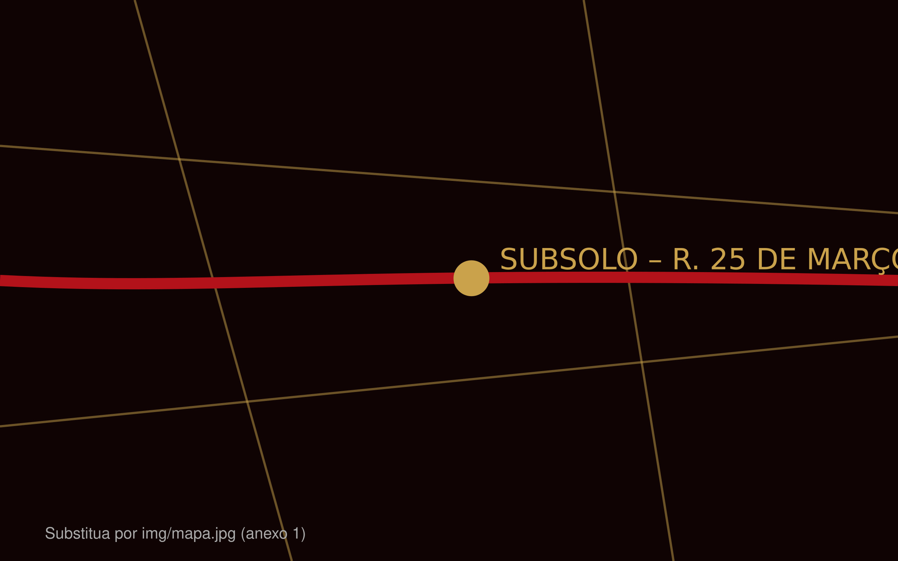

Informações
Rua 25 de Março, centro de São Paulo (SP). Portões às 18h.
Como chegar
Metrô
Linha 3-Vermelha até a estação Pedro II. Saia pela Rua Comendador Abdo Schahin e siga a pé pela Rua 25 de Março (cerca de 7 min). Ou Linha 1-Azul até São Bento e caminhe pela Rua Florêncio de Abreu.
Trem
Desça na estação Luz (Linhas 7, 10, 11 e 12 da CPTM), pegue a Linha 1-Azul sentido Jabaquara até São Bento, depois siga a pé.
Ônibus
Linhas que terminam no Terminal Parque Dom Pedro II deixam você a poucos minutos da entrada. Desça e siga pela Rua 25 de Março.
Mapa

Regras do festival
Pode levar
- Documento com foto e ingresso
- Protetor auricular
- Bolsa pequena até 30 cm
- Garrafa plástica vazia
- Capa de chuva descartável
Não pode levar
- Armas e objetos cortantes
- Bebidas e comidas de fora
- Garrafas de vidro e latas
- Drones e câmeras profissionais
- Mochilas grandes e guarda-chuva